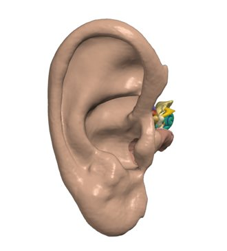

Ders notu
Son vaka
Devam et
Kimliksiz vaka
Ders notu
İşitme cihazı
İşitsel implant
Şema
Bölüm
Terim
Sonuç bulunamadı. Başka bir kelime dene.
Odyolojik terimler ve Türkçe karşılıkları. Kartı çevirmek için dokun; bildiysen sağa, tekrar etmek istersen sola at.
Aramaya uyan terim yok.
Sola attığın kartlar burada. Sağa atınca listeden çıkar.
Tekrar listen boş.
Öğrenme durumun (hangi kartları bildiğin) yalnızca bu cihazda saklanır. Terimlerin anlamlarını kendi ders kaynağınla doğrula.
Bir terimi düzenlemek ya da silmek için Liste'de terime dokun.
Kartlar
Liste
Tekrar listesi
Tekrar et
Çevir
Biliyorum
Tekrar listesini çalış
Bütün kartları yeniden çalış
Bu kartları çalış
Sırada {n}
Tekrar {n}
Öğrenilen {n}
Çevirmek için dokun
Çevirmek için dokun; sağ ok biliyorum, sol ok tekrar et.
TEKRAR
BİLİYORUM
Açıklama henüz eklenmedi.
Şimdilik çalışılacak kart kalmadı.
Sıradaki kart {tarih} tarihinde.
Henüz terim eklenmedi.
Terimler yüklenemedi. İnternet bağlantını kontrol et.
Henüz çalışılmadı.
Tekrar listesinde.
Öğrenildi ({k}. seviye). Yeniden gösterim: {tarih}.
Düzenle
Sil
Terimi ekle
Değişikliği kaydet
Kaydediliyor…
Terim eklendi.
Terim güncellendi.
Kaydedilemedi. Bağlantını ve yönetici girişini kontrol et.
Türkçe karşılık boş olamaz.
Bu Türkçe karşılıkla bir terim zaten var.
Veritabanına bağlanılamadı.
"{terim}" silinsin mi?
Terim silindi.
Terim silinemedi.
Etkinlikler
İş ilanları
Haberler
Tümünü gör
Şu an duyurulmuş sempozyum veya kongre yok. Yeni etkinlikler eklendiğinde burada görünür.
Şu an güncel iş ilanı yok. Yeni ilanlar eklendiğinde burada görünür.
Henüz haber paylaşılmadı.
Yükleniyor…
Paylaşımlara şu an ulaşılamıyor. Bağlantını kontrol edip sayfayı yeniden aç.
Bu paylaşım bulunamadı. Silinmiş olabilir.
Daha fazla göster
Geçti
Son başvuru
Bağlantıya git
Paylaş
Bağlantı kopyalandı.
Yeni
Şu an güncel duyuru yok.
Etkinlik
İş ilanı
Haber
görsel
Çıkan işitme yolağı kokleadan işitsel kortekse uzanır. Şemadaki bir basamağa dokun.
Şema basitleştirilmiştir; ara bağlantılar ve kolikuluslar arası geçiş gösterilmemiştir. ABR dalga kaynakları yaklaşıktır ve birden fazla yapı bir dalgaya katkı verir; kaynaklara göre atamalar değişir.
Kırmızı yollar sağ kulak uyarıldığında, mavi yollar sol kulak uyarıldığında çalışır. İpsilateral yolda yanıt uyarılan kulakta, kontralateral yolda karşı kulakta ölçülür. Bir basamağa dokun.
Şema basitleştirilmiştir. Karşıya geçişin tam düzeyi kaynaklara göre farklı anlatılır; burada trapezoid cisim düzeyinde gösterilmiştir.
Tarama ABR protokolünün akış şemaları. Bir kutuya dokun; ne zaman yapıldığı ve sonrasında ne olduğu aşağıda açılır.
1. tarama ABR doğumdan sonraki ilk 72 saat içinde (taburcu olmadan), 2. tarama ABR doğumdan sonraki 7–15 gün içinde, 3. tarama ABR doğumdan sonraki 15–30 gün içinde (30. günü geçmemeli) yapılır.
Test zamanlarıyla ilgili ayrıntılar «Yenidoğan İşitme Tarama Programında Tarama ABR Protokolü» belgesindedir.
Kaynak: T.C. Sağlık Bakanlığı Yenidoğan İşitme Taraması Programı, tarama ABR protokolü akış şemaları. Şemalar bu kaynağa bakılarak sadeleştirilip yeniden çizildi; güncel uygulama için programın son belgesine bakılmalıdır.
Görseller temsilidir, belirli bir marka veya modeli göstermez.
Uygun işitme kaybı aralıkları ve endikasyonlar kaynağa, üreticiye ve kliniğe göre değişir.
Vaka yorumlama asistanı. Vakalarım'daki vakaları alır; maskeleme kararlarını (hangi kulağa, ne zaman, ne kadar) ve akustik refleks örüntüsünü adım adım gösterir. Kuralları sabittir, tanı koymaz.
Merhaba, ben OdyoBOT. Vakalarım'daki vakalarını yorumlamana yardım ederim: maskeleme kararları ve akustik refleks örüntüsü. Bir ya da birkaç vaka seç, sonra ne yapacağımızı seçersin.
Vakalarım'da kayıtlı vaka yok. Önce bir vaka ekle, sonra buraya dön.
Hangi vakalara bakalım? Birden fazla seçebilirsin.
{n} vaka geldi. Sırayla bakacağız.
Ne yapalım?
Maskeleme kararları
Akustik refleks yorumu
Bu vakada refleks yorumu
Bu vakada maskeleme
Ölçümde hangi kulaklığı kullandın? Interaural attenüasyon (sesin bir kulaktan kafatası üzerinden öbür kulağa geçerken zayıflaması) değeri buna göre seçilir.
Vaka {i}/{n}: {vaka}
Kulaklık: {kulaklik}. Eşikler bu vakadan alındı. Değerler dB HL, maske düzeyleri dB EM (karşı kulağa).
* Ön karar: karşı kulağın o frekansta kemik eşiği yok, iki kulağın hava eşikleri karşılaştırıldı. Bu yol bazı gerekli maskelemeleri kaçırabilir; kemik eşiği ölçülünce tekrar bak.
En çok düzey, test kulağının maskesiz (görünürdeki) kemik eşiğiyle hesaplandı. Gerçek kemik eşiği daha kötüyse kullanılabilecek en çok düzey daha yüksektir.
Maskeleme ikilemi: başlangıç düzeyi aşırı maskeleme sınırının üstünde. Plato bulunamayabilir; insert kulaklık kullanmayı düşün.
Plato dar olabilir: başlangıç ile en çok düzey arasında 15 dB'den az var. Aşırı maskelemeye dikkat et.
Olası maskeleme ikilemi: başlangıç düzeyi, maskesiz kemik eşiğiyle tahmin edilen en çok düzeyin üstünde. Gerçek kemik eşiği daha kötüyse sorun olmayabilir; plato sırasında eşik sürekli kayıyorsa aşırı maskelemeyi düşün. İki taraflı iletim tipi kayıpta insert kulaklık yardımcı olur.
Plato dar olabilir (en çok düzey maskesiz kemik eşiğiyle tahmin edildi). Gerçek kemik eşiği daha kötüyse plato daha geniştir.
Kayıttaki maske düzeyi hesaplanan en çok düzeyin üstünde; aşırı maskeleme olmuş olabilir.
Not: Karşı kulağa maske verilince test kulağında yaklaşık 5 dB'lik eşik yükselmesi (santral maskeleme) olabilir. Bu eşiklerden çıkarılmaz; 5 dB'lik fark genelde anlamlı sayılmaz.
Bu bir hesap yardımcısıdır, tanı koymaz. Kararı klinik değerlendirmenle birlikte ver.
Plato (Hood) yöntemi: Maske karşı kulağa başlangıç düzeyinde verilir. Hasta duyarsa maske 5 dB artar; duymazsa ton 5 dB artar. Maske art arda 3 kez (15 dB) artırıldığı hâlde hasta aynı tonu duyuyorsa plato bulunmuştur.
Ton {ton} dB HL, maske {maske} dB EM. Hasta tonu duydu mu?
Plato bulundu. Maskeli eşik: {esik} dB HL (son maske {maske} dB EM). Vakalarım'da bu frekansı "maskeli" olarak güncelleyebilirsin.
Ton cihaz sınırını ({ton} dB HL) aştı ve plato bulunamadı. Aşırı maskeleme yoksa bu kulakta bu frekansta ölçülebilir işitme yok (NR).
Dikkat: maske hesaplanan en çok düzeyi ({enCok} dB EM) aştı. Eşik bundan sonra kayıyorsa aşırı maskeleme olabilir.
Bu vaka bulunamadı; silinmiş olabilir.
Seçtiğin vakaların hepsine baktık.
Akustik refleks örüntüsü
Kulak adı uyaranın verildiği kulaktır (sağ kontra: uyaran sağda, prob solda). Bir yolda girilen frekansların hepsi "Yok" ise ya da o yola hiç değer girilmemişse refleks yok sayılır; yükselmiş eşikler "var" kabul edilir.
Bu vakada akustik refleks girilmemiş.
Değer girilmeyen yollar "yok" sayıldı: {liste}. Bu yolları ölçmediysen yorum yanıltıcı olabilir.
değer girilmedi
Renkli çizgi: refleks var (kırmızı sağdan, mavi soldan uyaran; noktalı ipsilateral, düz kontralateral). Gri kesikli: refleks yok. Turuncu: olası bölge.
Bütün refleksler var. Bu, ölçülen frekanslarda orta kulak, koklea, 8. sinir, beyin sapı ve 7. sinir yolunun işlediğiyle uyumludur.
Bütün refleksler yok.
Tek bir bölgeyle açıklanamaz; iki tarafın birlikte etkilenmesi gerekir. Olası birleşimler aşağıda. İşitsel nöropati spektrum bozukluğunda da refleks beklenmez; prob ya da cihaz sorununu da dışla.
İki örüntünün birleşimi
Bu örüntü tek bir bölgeyle açıklanamıyor; iki tanımlı örüntünün birlikte görülmesiyle uyumlu. Olası birleşimler (şemada turuncu):
Yalnız ipsilateral refleks yok: {liste}
Kontralateral refleksler varken yalnız ipsilateralin yok olması tanımlı bir örüntü değildir ve tek başına yer göstermez. İpsilateral ölçüm artefakta daha yatkındır (uyaran ve prob tonu aynı kulakta). Prob yerleşimini kontrol edip ölçümü tekrarla; sürerse diğer bulgularla birlikte değerlendir.
dikey ({taraf})
çapraz ({taraf})
ters L ({taraf})
yatay
tek kutu ({taraf})
yalnız {taraf} ipsi
Yalnız {taraf} ipsilateral yokluğu yer göstermez; ölçümü tekrarla.
Dikey örüntü: prob {taraf} kulaktayken refleks yok.
Çapraz (diyagonal) örüntü: uyaran {taraf} kulağa verilince refleks yok.
Ters L örüntüsü: iki kontralateral refleks ve {taraf} ipsilateral refleks yok.
Yatay örüntü: iki kontralateral refleks yok, ipsilateraller var.
Tek kutu örüntüsü: yalnızca {taraf} kontralateral refleks yok.
Bu örüntüyü tek başına açıklayabilecek bölgeler (şemada turuncu):
{Taraf} orta kulak (hafif bir bozukluk bile prob kulağında refleksi siler)
{Taraf} 7. sinir (yüz siniri, stapedius dalının çıktığı yerden önce)
{Taraf} koklea (ileri kayıp), 8. sinir ya da koklear çekirdek; refleks bunları tek başına ayırt etmez
{Taraf} orta kulak (uyaranı da zayıflatan iletim bozukluğu)
Beyin sapı, {taraf} yana yakın
Beyin sapında orta hat (karşıya geçen yollar)
Beyin sapı: {taraf} taraftan karşıya geçen yol
{Taraf} timpanogram Tip {tip}: orta kulak açıklamasını destekler.
{Taraf} timpanogram Tip A: orta kulak normal görünüyor; diğer açıklama daha olası.
{Taraf} timpanogram girilmemiş; orta kulak açıklaması için timpanometriye bak.
{Taraf} kulakta hava-kemik farkı {abg} dB: iletim bileşeni var.
{Taraf} kulakta bu frekanslarda hava yolu eşiği {db} dB HL: ileri kayıp refleksin yokluğunu açıklayabilir (80 dB üstünde refleks alınmayabilir).
{Taraf} kulakta bu frekanslarda hava yolu eşiği {db} dB HL: refleks eşiği yükselmiş, cihaz sınırında alınamamış olabilir.
{Taraf} kulakta bu frekanslarda hava yolu eşiği {db} dB HL: bu düzeyde kayıp refleksin yokluğunu açıklamaz; 8. sinir ve beyin sapı açısından ABR ile değerlendir.
{Taraf} kulakta bu frekanslarda hava yolu eşiği girilmemiş.
Yüz siniri işlevini değerlendir.
Beyin sapı açıklaması ABR ve diğer bulgularla birlikte değerlendirilir.
Bazı frekanslarda yok (örüntüye katılmadı, o yol "var" sayıldı): {liste}.
Kaynak: Jerger ve Jerger (1977) refleks örüntüleri (Clark, Open Access Guide to Audiology and Hearing Aids for Otolaryngologists, "Acoustic (stapedius) reflexes", Tablo 1) ve ders slaytı (akustik refleksler, slayt 22–28).
Otomatik, telefonunun açık/koyu ayarına uyar. Seçim yalnızca bu cihazda saklanır.
Şimdilik yalnızca Türkçe. Başka diller ileride eklenecek.
Seçtiğin tema uygulamayı açan herkeste değişir.
Ders notu ekleme, düzenleme ve konu başlıkları Ders notları sayfasındaki "Notları ve başlıkları yönet" panelinde.
Bu sayfa yalnızca ilan, haber, ders notları ve cihaz açıklamalarını yöneten kişi içindir.
Başlığın adını değiştirip "Kaydet"e dokun. Silinen başlığın notları silinmez, "Diğer notlar" altına geçer. Bir notun başlığını notun kendi sayfasından değiştirebilirsin.
Bunlar kısa özetlerdir. Sınır değerler kaynağa, yaşa ve kliniğe göre değişir; kendi ders kaynağınla doğrula.
Bunlar kısa özetlerdir. Sınır değerler kaynağa, yaşa ve kliniğe göre değişir; kendi ders kaynağınla doğrula.
Odyometri vakalarının kaydı. Kayıtlar yalnızca bu cihazda saklanır ve hiçbir yere gönderilmez.
Tarayıcı verisini silersen ya da cihaz değiştirirsen kayıtlar kaybolur. Ara sıra yedek al. Yedek dosyası sağlık verisi içerir; telefondan çıkardığında (paylaşma, e-posta) korumak senin sorumluluğunda.
iPhone'da indirme çalışmazsa "Yedeği paylaş" düğmesiyle "Dosyalar'a kaydet"i seç.
Derece: hava yolu ortalamasına göre Clark sınıflaması. Tip: hava-kemik farkı (ABG) 10 dB ve üzeri anlamlı sayılır. Sınır değerler kaynağa ve kliniğe göre değişebilir.
Otomatik değerlendirmedir, klinik karar odyologa aittir.
Detaylı: vaka etiketi, tarih, odyogram, lejant, ortalamalar, derece, tip, konuşma odyometrisi, girilen timpanometri, akustik refleks, OAE ve ABR sonuçları (ABR fotoğrafları dahil) ve notlar. Grafik düzeni (tek / ayrı) yukarıdaki seçime uyar.
Çıktı sağlık verisi içerir. Telefondan çıkardığında (paylaşma, e-posta) korumak senin sorumluluğunda. iPhone'da indirme çalışmazsa "Paylaş" düğmesini kullan.
Vaka kaydedildi.
Değişiklikler kaydedildi.
Kaydedilmedi: kırmızı alanları düzelt ({n} alan).
Kaydedilmedi: vaka kimliği gerekli.
Kaydedilemedi. Tarayıcının depolama alanı dolu ya da kapalı olabilir (örneğin gizli sekmede).
Timpanogram
Girilen değerlerden üretilmiş çizimdir, cihaz kaydı değildir.
tepe yok
Tip: A kompliyans 0,35–1,30 ml ve tepe −100 ile +50 daPa; As 0,35 ml altı; Ad 1,30 ml üstü; C tepe −100 daPa altı; B tepe yok. Tepe +50 daPa üstündeyse sınıflanmaz. Sınırlar kaynağa ve yaşa göre değişebilir; otomatik değerlendirmedir.
Akustik refleks
İpsi
Kontra
Yok
OAE
Sinyal
Gürültü
Fark
TEOAE tekrarlanabilirlik (%)
TEOAE prob stabilitesi (%)
Düz çizgi ve renkli çubuk: emisyon (sinyal). Kesikli çizgi ve gri çubuk: gürültü. Sağ kırmızı, sol mavi. Girilen değerlerden üretilmiş çizimdir, cihaz kaydı değildir.
Değerler dB SPL: sinyal / gürültü. ✓: fark en az 6 dB (emisyon var). Geçti: en az 3 frekansta emisyon. TEOAE'de tekrarlanabilirlik %80 ya da prob stabilitesi %90 altındaysa kayıt geçersiz sayılır. Tarama ölçütüdür; ölçütler cihaza ve protokole göre değişebilir.
ABR
ABR kayıt fotoğrafı
ABR kayıt fotoğrafı
Fotoğrafı büyüt
Kaldır
Tip A
dB nHL
Latans-şiddet (V. dalga)
Dalgalar arası (ms)
Latanslar ms, şiddet dB nHL. Dalgalar arası süreler girilen latanslardan hesaplanır; norm karşılaştırması ve yorum yapılmaz. Dalga izi çizilmez.
Eşikler dB. Kulak adı uyaranın verildiği kulaktır (sağ kontra: uyaran sağda, prob solda).